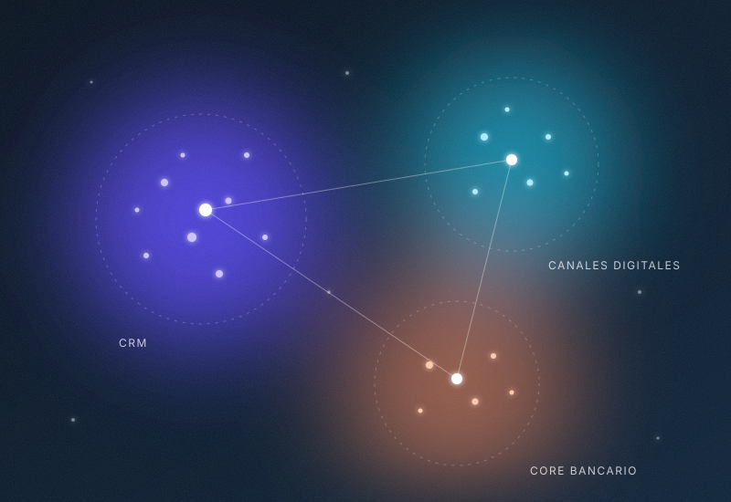
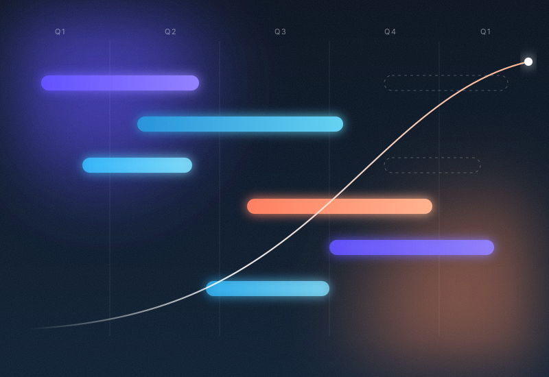

Discovery aumentado
Sintetizo entrevistas, reviews y tickets con LLMs para detectar patrones y oportunidades en horas, no semanas.
Disponible para nuevos proyectos
Llevo 14 años creando productos digitales. Defino visión, priorizo con evidencia y acelero cada etapa del ciclo de producto con inteligencia artificial: del discovery a la entrega.
01 — Enfoque
Sintetizo entrevistas, reviews y tickets con LLMs para detectar patrones y oportunidades en horas, no semanas.
Modelos de scoring (RICE, impacto/esfuerzo) alimentados con datos reales y análisis asistido para decidir mejor.
Historias de usuario, criterios de aceptación y documentación generados y refinados con IA junto al equipo.
Experiencia en procesos de
Procesos bancarios, onboarding digital, pagos y cumplimiento regulatorio.
Operación de tiendas, inventario, fidelización y omnicanalidad.
Checkout, catálogo, conversión y experiencia de compra online.
Digitalización de operaciones, trazabilidad y gestión de activos.
02 — Proyectos seleccionados

Pipeline de análisis con LLMs para agrupar dolores de usuario. Redefinimos el roadmap del trimestre y elevamos la retención un 18%.

Combiné analítica de uso y scoring asistido por IA para priorizar features. Reducción del 30% en funcionalidades sin adopción.
Flujo donde agentes redactan historias y criterios de aceptación que el equipo valida. El refinamiento pasó de 4 a 1,5 horas por sprint.
03 — Stack
Claude · ChatGPT · Copilot · Notion AI · Midjourney
Jira · Confluence · Miro · Figma · Productboard
Amplitude · Mixpanel · Looker · SQL
Scrum · Kanban · Design Thinking · OKRs · Lean
04 — Contacto